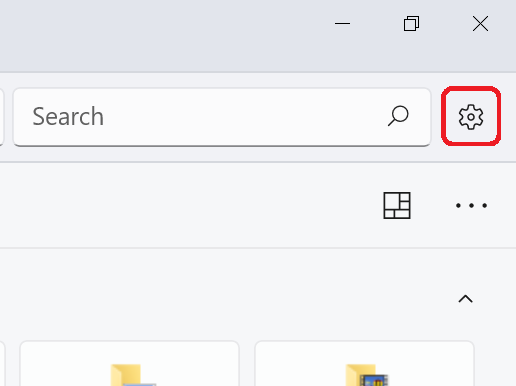
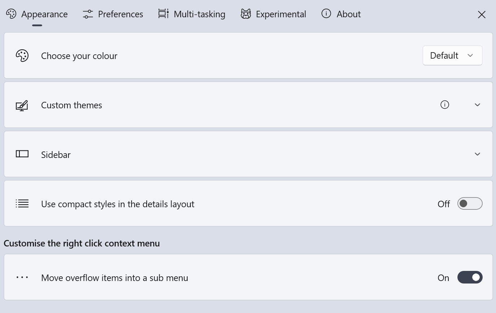
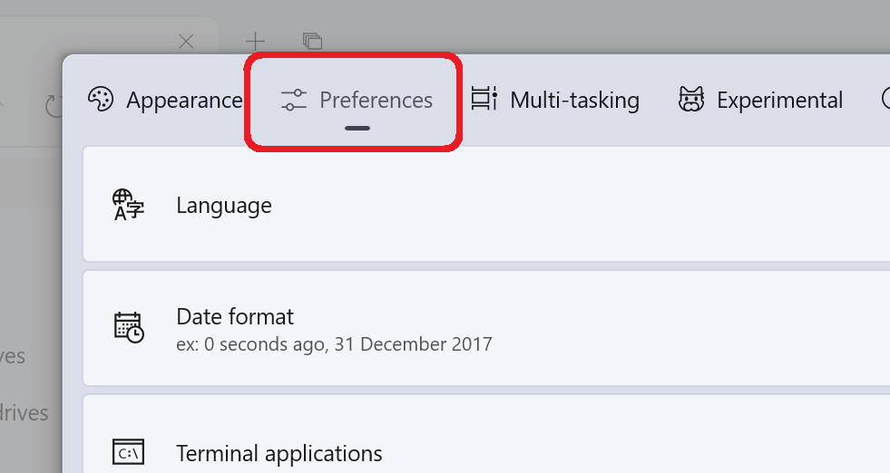
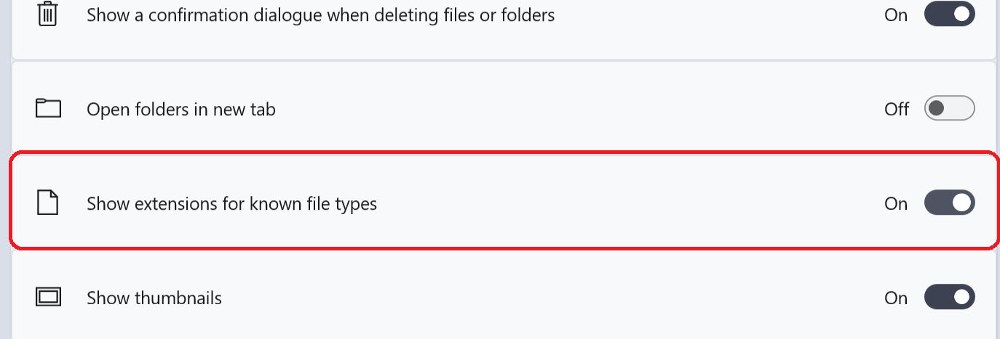
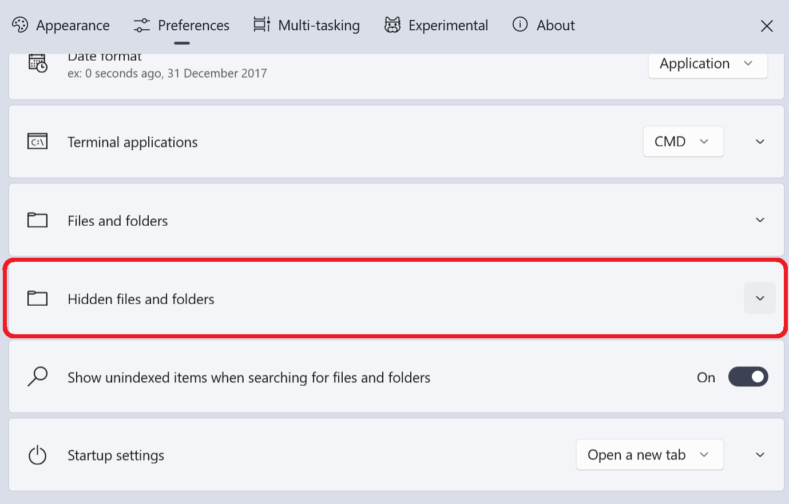
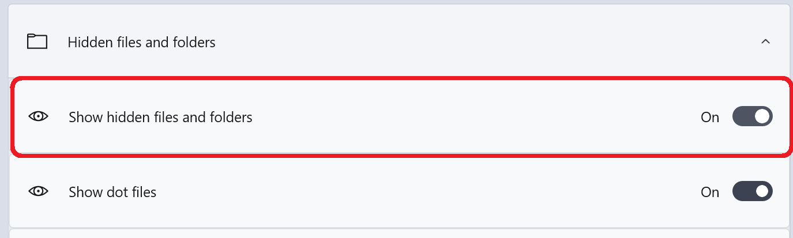

Your brother is hiding something from you on his computer and you don't know what that is, and that's why you are here to find it out.
He can be hiding anything like photos, videos, audios, games, documents, etc
I have listed all the things I know that he might be hiding and the places where you can find them and how you can find them.
before you start, I want you to know some terms and to do some settings, so it will easier for you to do rest of the stuff
Files
mostly everything in computer is a file, these are used to store information. photo, video, audio, games, etc all are files. these just differ by extensions.
Files Extensions
you will find these at the end of the file starting with a dot(.). Extensions are mainly of 3 or 4 character like, .jpg, .jpeg, .mp3, .exe. I will tell you more about these later as you proceed, these are going to help us finding photos, videos, games, audios, for now this is enough.
Folder
folder are like container. they are used to store and group files and other folders.
here are the settings and some work I want you to do.
open Microsoft Store and install files app.

why install files app? I didn't know which version of windows you are using and files app work on both windows 10 and 11.
now open files app and enable show hidden files and folders option and show files extensions option. how??
Open Files App and app gonna look like the image below

Open Setting


Go to Preferences

Search for Files and Folders option and expand it. scroll down if needed.

Turn on the Show extensions for known file type option

Unexpend the Files and Folders option
Search for Hidden Files and Folders option and expend it, scroll down if needed

Turn on the Show Hidden Files and Folders option

Close the Files apps settings
Searching for Photo , Video and Audio
searching for all of these 3 going to be the same. click below to see how to find photo, video and audio
see how to find above 3
finding photo, video and audio
Let's see the extensions of Photos, Videos and Audio. they will help you determining the type of file it is.
Photo
.jpg
.jpeg
.png
.gif
.webp
.bmp
.eps
.tif
.tiff
Video
.mp4
.mkv
.mov
.webm
.mpeg-2
.wmv
.avi
.avchd
.flv
.f4v
.swf
Audio
.mp3
.aac
.ogg
.flac
.alac
.wav
.aiff
.dsd
.pcm
.f4v
.swf
Look for these in the Files App.
.png)
open the app go in the home and there you will see 5 folder Desktop, Document, Downloads, Music, Pictures, Videos. open these folders one by one and search for the file in them. there might be folders inside these folder so search in them also.